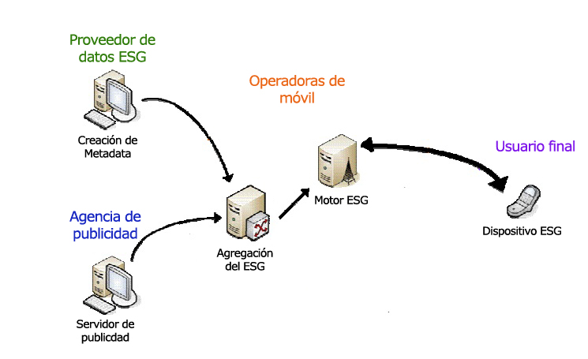

ARQUITECTURA DE RED
La arquitectura de red es el diseño de una red de comunicaciones. Es un marco para la especificación de los componentes físicos de una red y de su organización funcional y configuración, sus procedimientos y principios operacionales, así como los formatos de los datos utilizados en su funcionamiento.
En la telecomunicación, la especificación de una arquitectura de red puede incluir también una descripción detallada de los productos y servicios entregados a través de una red de comunicaciones, y así como la tasa de facturación detallada y estructuras en las que se compensan los servicios.
La arquitectura de red de Internet se expresa de forma predominante por el uso de la familia de protocolos de Internet, en lugar de un modelo específico para la interconexión de redes o nodos en la red, o el uso de tipos específicos de enlaces de software.
(01-06-2019). Concepto.de. www.conceptoderesdes.com. https://concepto.de/redes-informaticas/ (URL).